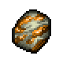
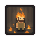

Iron ore
| Iron ore | |
|---|---|
 | |
General Information
| |
Type :
|
Primary Ore |
Stack size:
|
30 |
Base Cost :
|
|
Source(s)
| |
Buy from :
|
Krezvold (T I) |
Sell to :
|
Krezvold (T I) |
| Mining | |
Study Information
| |
Study reward:
|
|
Technical Information
| |
Internal name:
|
ore_metal |

Iron ore is collected either from the bog ore outcroppings, from iron deposits or via a zombie ore mine. Bog ore outcroppings can be found in the swamp and in the area directly north of the workyard. The only iron deposit at the moment can be found along the northern most cliff face, north of the cabin in the woods. The zombie ore mine is also located there. Iron ore can be smelted into iron ingots or sold to the blacksmith. More on the locations of iron ore and how to get it can be found here.
Study
| Study table | |||
|---|---|---|---|
| Tech Points | Resources Required | Energy | Notes |
| 1× Faith 1× Science |
- |
Not decomposable | |
Crafting
| Furnace | ||
|---|---|---|
| Item Produced | Materials Required | Cost |
| 1× Iron ingot |
1× Iron ore |
2:30 - |
| * 2× Iron ingot |
2× Iron ore |
4:10 - |
| Furnace II | ||
| Item Produced | Materials Required | Cost |
| 2× Iron ingot |
2× Iron ore |
2:30 - |
| * 4× Iron ingot |
4× Iron ore |
4:10 - |
| Furnace III | ||
| Item Produced | Materials Required | Cost |
| 3× Iron ingot |
3× Iron ore |
2:00 - |
| * 6× Iron ingot |
6× Iron ore |
3:20 - |
| * Requires  Fireman perk. | ||

| |||||||||||